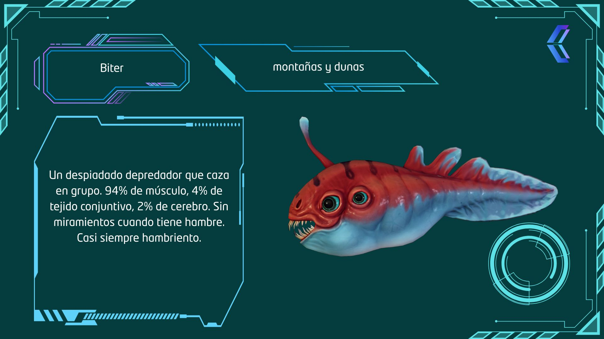
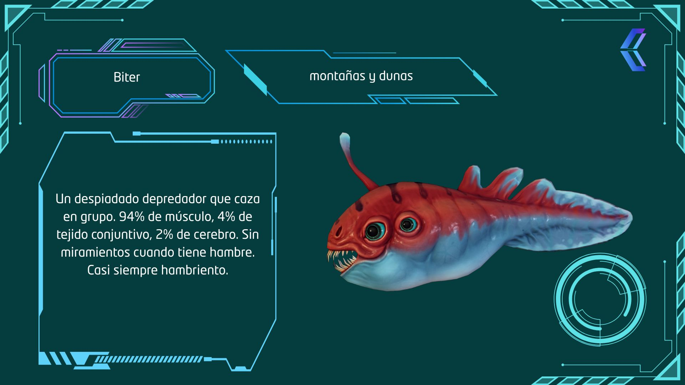
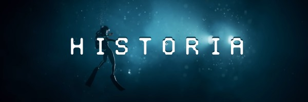

Charlie Cleveland
Director de Subnautica y cofundador de Unknown Worlds.
Explora las profundidades
Este tráiler muestra una vista previa del entorno submarino de Subnautica. Descubre paisajes increíbles, criaturas extrañas y un mundo lleno de misterio. Además puedes escuchar una canción original para transportarte a este mundo misterioso
Podrás descubrir más sobre este inmenso ecossitema en tu tableta


 



Subnautica es un juego de exploración y supervivencia en un planeta alienígena lleno de vida,
misterio y sobre todo agua. Sumérgete en un mundo submarino vibrante mientras recolectas
recursos, construyes refugios y descubres los secretos de las profundidades.
En Subnautica eres libre de avanzar a tu ritmo, haciendo que la curiosidad y el instinto de
exploración guíen tu experiencia. Poco a poco, lo que parece un planeta inhóspito se
convierte en una pieza de un rompecabezas mucho mayor, que transforma tu objetivo inicial
en algo mucho más profundo.


Tras despertar en una cápsula de emergencia flotando en un vasto océano alienígena, lo único claro es que has sobrevivido a un accidente... por ahora. Desde ese momento, te enfrentas no solo al reto de sobrevivir en la naturaleza salvaje, sino también a los misterios que esconde este nuevo planeta. A medida que avanzas, descubrirás señales de civilizaciones pasadas, instalaciones abandonadas y tecnológicas que plantean más preguntas que respuestas.
Explora e investiga ecosistemas marinos variados, construye bases modulares, pilota submarinos y mejora tu equipamiento. Administra recursos como oxígeno, comida y batería mientras exploras las profundidades del planeta . La experiencia combina supervivencia, exploración y narrativa ambiental de forma orgánica
¿Qué es Subnautica?
Subnautica es un videojuego el cual nuestra compañía lleva años barajando. Es un juego de aventuras y supervivencia en primera persona y en un entorno acuático. El jugador debe explorar, recolectar recursos, construir bases y más.
¿Cómo puedo apoyar el proyecto?
Hay muchas formas de ayudarnos a hacer realidad subnautica:
Apoyar económicamente el proyecto: Puedes hacer donaciones a través de la página, hay una serie de recompensas (Gorras,peluches) que serán enviadas dependiendo de la cantidad de ayuda económica al proyecto.
Comparte la campaña: No hace falta que apoyes económicamente, con hablar del juego y darnos a conocer a otras personas nos ayudas mucho. Cuanto más personas conozcan el proyecto, más lejos podremos llegar.
Participa en encuestas: Si accedes a nuestro discord, podrás ayudar en las encuestas que hacemos de diseño.
¿Qué pasa si se cancela el proyecto?
En caso de que el proyecto subnautica se cancele, todas las ayudas económicas al proyecto serán devueltas y evaluaremos nuestros próximos pasos. No obstante, contamos con plena confianza en que el proyecto seguirá adelante sin problemas.
¿Cuándo se lanzará el juego?
Nuestro objetivo es lanzar una versión jugable en Early Access a finales de 2025, no especificamos aún un mes. En cuanto al lanzamiento del juego completo, está previsto para 2026.
¿En qué plataformas se lanzará el juego?
Se lanzará en las siguientes plataformas
¿Quieres conocer a aquellos detrás de Subnautica?
Director de Subnautica y cofundador de Unknown Worlds.
Ingeniero de software lider.
Director técnico y cofundador de Unknown Worlds.
Programador líder.
Director de arte y artista conceptual.
Animador técnico.
Animador.
Escritor y Diseñador de narrativa.